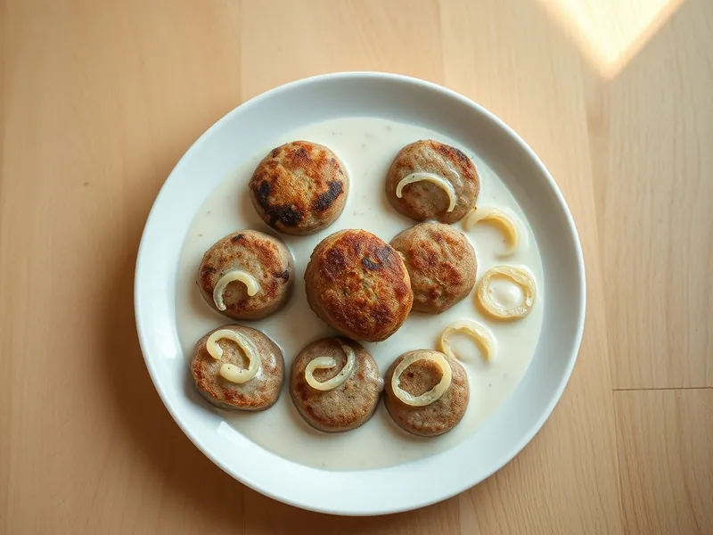

Котлеты в сметанном соусе на сковороде
Котлеты из фарша, обжаренные и потушенные в сметане с луком, сразу с подливкой
30 мин4 порц.557 ккал на порциюБ 26 · Ж 47 · У 8Русская кухня
Открыть в приложении: порции, таймеры, список покупок
Продукты на 4 порц.
- Фарш свино-говяжий500 г
- Лук репчатый1 шт
- Яйцо куриное1 шт
- Хлеб белый1 шт
- Молоко50 мл
- Сметана 20%8 ст. л.
- Вода150 мл
- Растительное масло2 ст. л.
- Соль1 ч. л.
- Перец чёрный молотый1 щеп.
Как готовить
- Замочите хлеб в молоке на 3 минуты. Половину лука натрите на мелкой тёрке, вторую половину нарежьте полукольцами.
- Смешайте фарш, отжатый хлеб, тёртый лук, яйцо, соль и перец, вымешивайте 2 минуты, пока масса не станет липкой. Мокрыми руками слепите 8 небольших котлет.
- Разогрейте масло на среднем огне и обжарьте котлеты по 3 минуты с каждой стороны до румяной корочки.
- Добавьте лук полукольцами вокруг котлет и жарьте 2 минуты, пока он не станет мягким.
- Смешайте сметану с водой и щепоткой соли, залейте котлеты. Накройте крышкой и тушите на слабом огне 12 минут, пока сок при проколе котлеты не станет прозрачным.
Совет. Сметану обязательно разводите водой и не давайте соусу бурно кипеть: на сильном огне сметана сворачивается хлопьями.